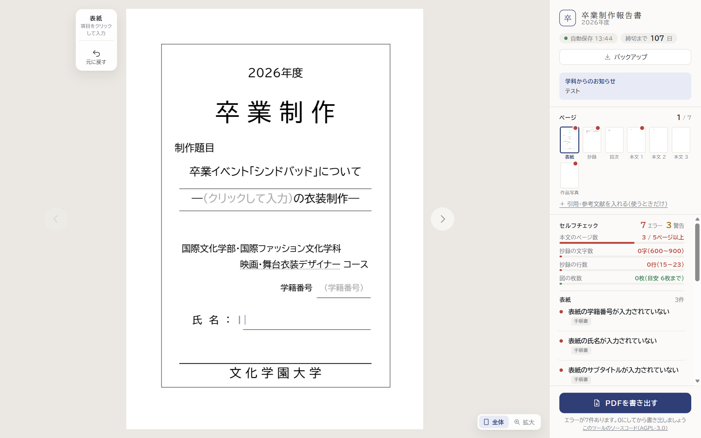
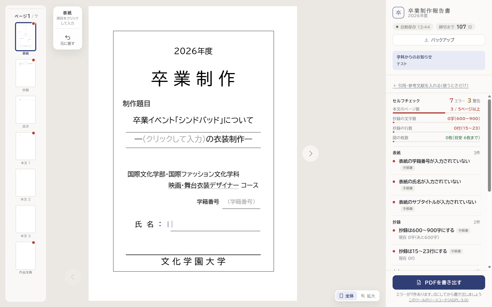
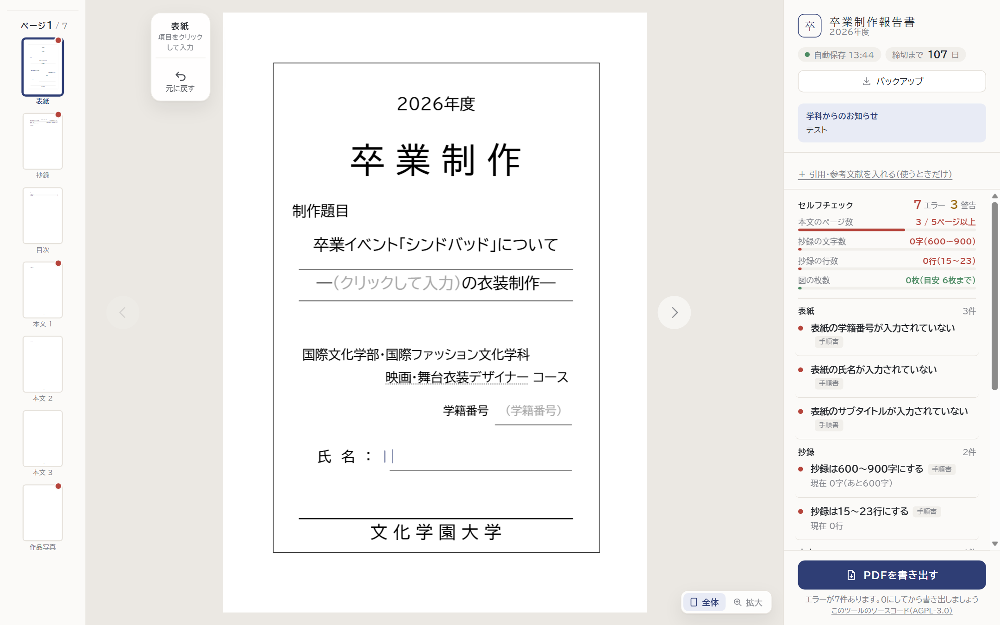
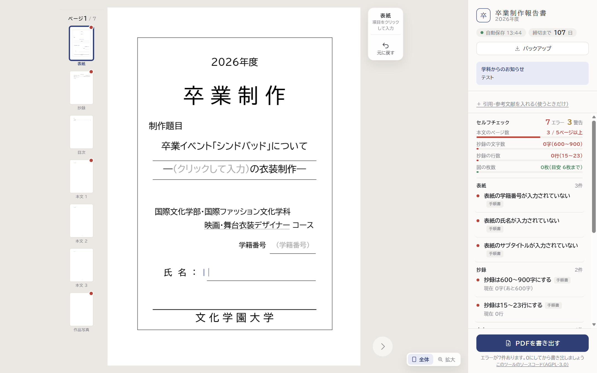

ページの一覧を左に縦に並べる（PowerPoint のように）
どの案も、右の欄はセルフチェックが上に来て、指摘が多く見えるようになります。一覧の見本は今より大きくなります。
今右の欄の上に、横に並べた小さな一覧
案1 紙面の左の空いているところに縦一列道具は紙面のすぐ左のまま。紙面の大きさは変わらない（画面の幅が狭いパソコンでは、紙面が少し小さくなる）
案2 画面の左端に一覧の欄（PowerPoint と同じ形）左・中央・右の3つの欄になる。いつも同じ場所にあってわかりやすいが、紙面は少し小さくなる
案3 一覧を紙面のすぐ左、道具を紙面の右わきへ一覧と紙面が近く、ページを行き来しやすい。道具は右側になる